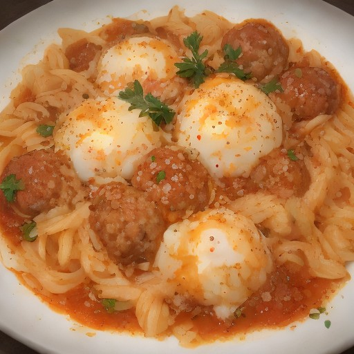

パスタ
とろり半熟卵×デミグラスハンバーグの、甘辛スパイシースパイスパスタ

とろける半熟卵とデミグラスハンバーグの組み合わせで、スパイシーな甘辛スパイスが食欲をそそる、一皿に詰まった悪魔的な美味しさ！
💡 こんな時・こんな人におすすめ！
特別な日に、週末のディナーにぴったり
📋 必要な材料（ポストイット風）
材料リスト 1
- デミグラスハンバーグ1個
- とろける半熟卵1個
- スパイスミックス適量
材料リスト 2
- パスタ適量
- トマトケチャップ適量
🍳 作り方ステップ
1
1. デミグラスハンバーグをフライパンで焼き、半熟卵をトッピング。
2
2. スパイスミックスをパスタとトマトケチャップを加え、混ぜ合わせる。
3
3. 熱したフライパンでパスタを加え、全体を炒め、半熟卵とデミグラスハンバーグを絡める。
4
4. 仕上げに、半熟卵の黄身とデミグラスハンバーグの肉汁を絡めて、食欲をそそる味わいに仕上げる。